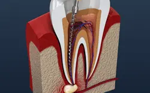
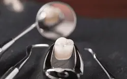
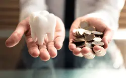

If you’ve just been informed you need a root canal, it’s a pretty safe bet to assume you’re not thrilled at the prospect. Root canal therapy has a bad reputation for being painful, but when done right, these treatments will actually relieve pain and save a tooth that may otherwise need to be pulled. At Pleasant Grove Family Dentistry, we use every resource we have to help patients maintain their healthy, natural tooth structures. Root canal therapy may not be our most popular smile saving tool, but it is one of the most effective. If you’re in need of a root canal, take a breath. It is not the painful, stressful experience you may believe. Call our dedicated dentist and team to schedule an appointment for Texarkana root canal therapy in our family-friendly dental office. We will work hard to get you out of pain and put the smile back on your face quickly.
When are Root Canals Needed?
Root canals are needed when a tooth’s damage or decay accesses the pulp layers of teeth. This inner layer is where the tooth’s nerve runs through the tooth to the supportive gum and bone tissue and out to the rest of the body. When this nerve is accessed by decay or damage, the result can be serious toothache or sensitivity, which means you need a root canal.
Do I Need a Root Canal?
When you visit our office, we’ll use diagnostic x-ray imaging to determine whether or not you need a root canal. However, we often end up providing root canal therapy on an emergency basis, so patients should be aware of the common warning signs of this oral health issue. Some of the many early indicators of a need for root canal therapy include:
- Severe toothache that will likely increase when chewing or biting
- Sensitivity to changes in temperature
- Discoloration of the tooth usually near the gum line
- Swelling or inflammation of the gums around a specific tooth
- Infection in the soft tissue and warning signs of infection like fever
How are Root Canals Performed?
The root canal process itself is actually relatively straightforward. We numb the area around the tooth. Then, we drill a hole from the top of the tooth into the pulp. The damaged dental structure, pulp, and nerve are all extracted through this access hole. In some cases, we will need to prescribe oral or topical antibiotics to remove infection and bacteria before we complete the root canal. The tooth is refilled with a biocompatible substance, and the access hole is resealed. In most cases, we also place a dental crown to protect and strengthen the remaining, healthy tooth structure.
What Happens After Root Canal Therapy
Following root canal therapy, most patients experience almost immediate relief from the toothache and dental sensitivity that so often precedes a need for these treatments. In most cases, apart from some mild inflammation in the gums or sensitivity in the first few days after root canal therapy, patients feel almost as good as new. If you do experience increased pain, discomfort, or sensitivity for more than 48 hours after treatment, you should contact us immediately.
Understanding the Cost of Root Canals
When you have an infected tooth, your top priority should always be to stop your pain and avoid further dental issues. That said, you should also take the time to consider how much your root canal therapy will cost so that you can make a plan for fitting it into your budget.
At your initial consultation, our team members will review the root canal procedure with you, give you an estimate of how much you can expect to pay for it, and review the available financial options that can help you keep your dental costs under control.
Read more
Factors That Can Affect Root Canal Cost

In general, root canal therapy for the molars – the teeth near the back of your mouth – is more costly compared to treatments involving the front teeth. This is due to the fact that the molars have more complicated canal systems, which makes them more difficult to clean.
In complex cases, we might have to refer you to an endodontist. If we do, you’ll have to account for the cost of seeing a separate specialist.
Finally, it’s important to remember that you may have to pay for additional services. For example, after your root canal therapy is complete, you may have to get a crown to protect the treated tooth.
All of these factors – and the impact they have on how much you end up paying for your treatment – will be thoroughly discussed before your root canal therapy begins.
Is it Cheaper to Pull My Tooth?

Looking at just the prices for root canal therapy and tooth extraction, the latter does tend to cost less. That said, having a tooth removed isn’t necessarily better for your wallet. Tooth replacements such as dental implants, bridges, and dentures all have their own costs to consider. And even if you leave the gap alone, you could still be at risk for oral health issues that may eventually require expensive care.
In short, saving a tooth with root canal therapy is often more cost-effective than having it removed. If you’ve been told that you need a root canal, we recommend having it done as soon as possible; if you wait too long, the damage to the tooth might become severe enough that you may not have any choice but to have the tooth removed.
Does Dental Insurance Cover Root Canal Therapy?
Many dental insurance plans are willing to help pay for root canal therapy. Some plans classify it as a basic procedure while others consider it to be a major service; as such, coverage may be anywhere between 50% to 80%. Call your insurance company before committing to root canal therapy so that you can confirm the details of your plan.
Other Options for Making Root Canal Therapy Affordable

Our practice is happy to work with CareCredit to make root canal therapy and other treatments more affordable for our patients. If you sign up for a CareCredit plan, you can break the cost of your care into smaller monthly installments at low-to-no-interest. Reach out to our office if you’re interested in learning more about CareCredit and how to apply.
Root Canal Therapy FAQs
Has your dentist informed you that you’ll need a root canal to preserve your tooth? While you can benefit greatly from this procedure, it’s normal to have some concerns before moving forward with the treatment. To help you feel comfortable and well-informed, we’ve compiled a list of some of our most regularly asked questions about root canal therapy in Texarkana. Read on to learn more or reach out to us today if you’d like to schedule your appointment.
Read more
What Should I Do Before a Root Canal?
Firstly, you’ll want to make sure you eat a healthy meal before undergoing your procedure, as it can be difficult to chew food for some time afterward. You’ll also need to avoid alcohol as well as using tobacco products—both of which can interfere with the local anesthetic we’ll use to numb your tooth. Our team may even recommend that you take over-the-counter pain medication, such as ibuprofen, just before your appointment to minimize discomfort once the numbing effects wear off. Get plenty of rest the night before your visit, as this will help prepare your immune system for a smoother recovery and make you feel less anxious.
How Long Do Root Canals Last?
Generally speaking, root canals tend to have an incredibly high success rate. Most patients who receive this treatment can enjoy a comfortable and fully functional tooth for many years to even a lifetime. Of course, the lifespan of your root canal will mainly depend on different factors such as the degree of damage to your tooth. To ensure a long-lasting treatment, you’ll need to stick closely to your dentist’s aftercare instructions and implement great oral hygiene moving forward.
How Long Does It Take to Recover from a Root Canal?
Recovering from root canal therapy will be different for every patient. Many can go back to work or school immediately after their appointment is finished. However, if your job requires intense physical activity, then you might have to take a couple or a few days off to heal properly. Vigorous exercise can cause your blood to be diverted from the surgical site, delaying your recovery. It’s also normal to feel sore for some time, but this is typically short-lived and can be managed with over-the-counter and/or prescribed painkillers. During your recovery, stick to softer meals while chewing on the other side of your mouth.
Can I Take Antibiotics Instead of Getting a Root Canal?
Although antibiotics can be used to effectively target bacterial infections in other parts of your body, they won’t be able to treat one in your tooth. These medications travel through the bloodstream to address infected areas, and since the bloodstream doesn’t reach the pulp of your teeth, it can’t eliminate the bacteria within. For this reason, the best way to treat infected teeth is with root canal therapy or extraction.